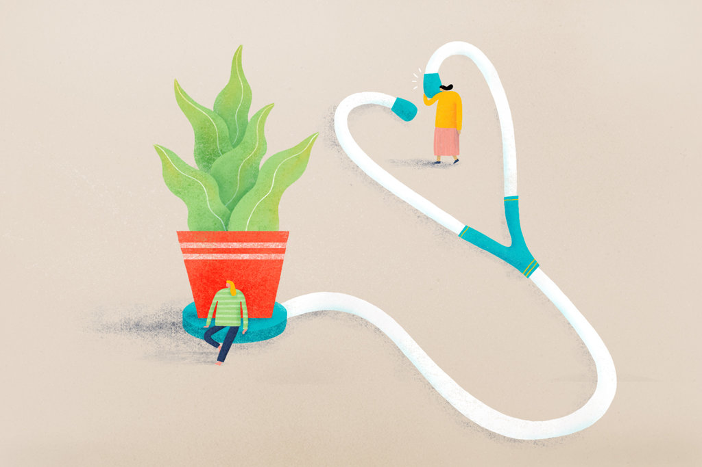

Can you spot a good relationship? Of course nobody knows what really goes on between any couple, but decades of scientific research into love, sex and relationships have taught us that a number of behaviors can predict when a couple is on solid ground or headed for troubled waters. Good relationships don’t happen overnight.
They take commitment, compromise, forgiveness and most of all — effort. Keep reading for
the latest in relationship science, fun quizzes and helpful tips to help you build a stronger
bond with your partner.
"
It’s natural for humans to want to feel needed, and like they’re part of something bigger.
"
Falling in love is the easy part.
The challenge for couples is how to rekindle the fires of romance from
time to time and cultivate the mature, trusting love that is the hallmark
of a lasting relationship. Terry Hatkoff, a California State University sociologist, has created a love scale that identifies six distinct
types of love found in our closest relationships.
Romantic: Based on passion and sexual attraction
Best Friends: Fondness and deep affection
Logical: Practical feelings based on shared values, financial goals, religion etc.
Playful: Feelings evoked by flirtation or feeling challenged
Possessive: Jealousy and obsession
Unselfish: Nurturing, kindness, and sacrifice

Understanding what makes your partner feel loved can help you navigate conflict and put romance back into your relationship.
You and your partner can take the Love Style quiz from Dr. Hatkoff
and find out how each of you defines love. If you learn your partner
tends toward jealousy, make sure you notice when someone is flirting
with him or her. If your partner is practical in love, notice the many
small ways he or she shows love by taking care of everyday needs.
The psychology professor Elaine Hatfield has suggested
that the love we feel early in a relationship is different
than what we feel later. Early on, love is “passionate,”
meaning we have feelings of intense longing for our mate.
Longer-term relationships develop “companionate love,”
which can be described as a deep affection, and strong feelings of commitment and intimacy.